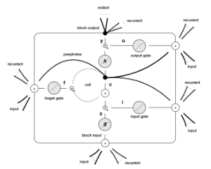
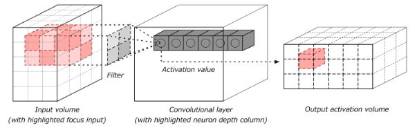

Long Short-Term Memory Networks (LSTMs)
 Recurrent neural networks and Long short-term memory networks (LSTMs) have been shown to model sequence data effectively. A recurrent neural network can be thought of as multiple copies of the same network each passing a message to a successor.
LSTMs have specific gates, different than a normal artificial neuron in a multi-layer perceptron, that have the following properties:
- Input gate protects from irrelevant input
- Forget gate helps the unit forget previous memory contents
- Output gate exposes the contents of the memory cell (or not) at the output time of the LSTM unit
We often will recommend applying LSTM networks to data that is sequential in natural, such as:
- Web session data for users travesing a web site
- Smart grid sensor data
- Mesh network sensor data
- Financial transaction data
Convolutional Neural Networks
Deep learning exploded onto the tech scene in the mid-2000's with large advances in the area of computer vision. Convolutional neural networks are the current state of the art for image modeling in the computer vision space.
We can help operationalize convolutional models within your infrastructure and applications. Patterson Consulting specializes in integration convolutional networks such as YOLO for object detection within image data. We can help with such tasks as making sure your keras / python models are properly integrated into Java applications for better IT support and management.